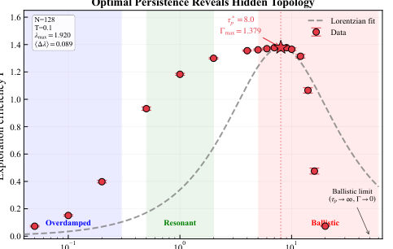

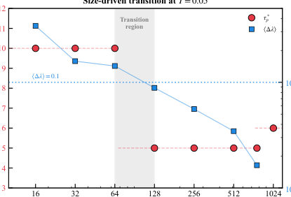
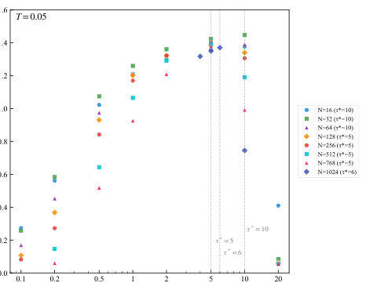
← Index · ← Previous · Next →
Authors: Fuga Ishii, Mizuki Yamaguchi
Type: theory · Category: statistical mechanics · PDF: https://arxiv.org/pdf/2605.19606v1
Analysis basis: full PDF text, analyzed in chunks
Topic relevance: non-equilibrium dynamics 3/5 · scars & prethermalization 2/5
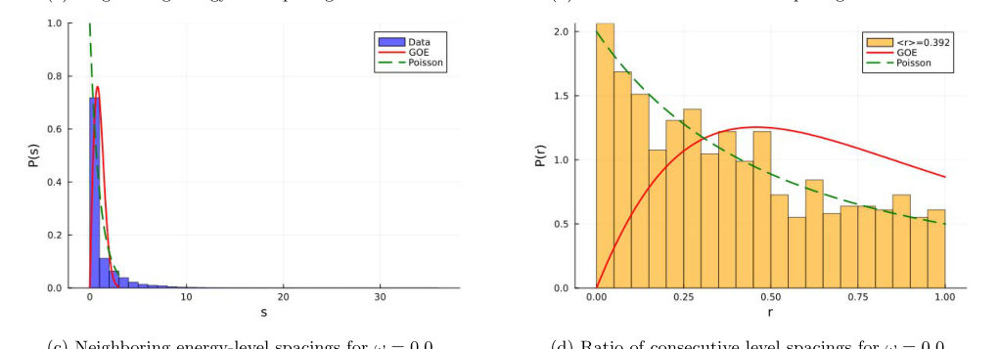
Summary. The paper provides a rigorous mathematical proof that the 1D Holstein and Holstein-Hubbard models lack local conserved quantities beyond the Hamiltonian and fermion number. This establishes the nonintegrability of these fundamental electron-phonon models. The result extends the scope of known nonintegrability proofs to systems where fermions and bosons are coupled.
Why it may be interesting. This provides a rigorous foundation for assuming thermalization and non-integrability in electron-phonon systems, which is crucial for understanding transport and many-body dynamics in condensed matter.
Main problem. Proving the absence of local conserved quantities (nonintegrability) in electron-phonon coupled systems, specifically the 1D Holstein and Holstein-Hubbard models.
Main result. The authors rigorously prove that for the 1D Holstein and Holstein-Hubbard models, there are no nontrivial local conserved quantities other than the Hamiltonian and the total fermion number operator.
Method. An algebraic proof using commutator analysis and operator basis expansion to show that the coefficients of potential k-local conserved quantities must vanish.
Model / system. The 1D Holstein model, which consists of itinerant fermions coupled to dispersionless phonons, and its extension, the Holstein-Hubbard model, which includes onsite Coulomb interactions.
Key observables. Local conserved quantities, level-spacing statistics (P(s) and P(r)), and energy-level distributions.
Important parameters / regimes. Hopping amplitude (t), electron-phonon coupling strength (g), phonon frequency (omega), and Coulomb interaction (U); nonintegrable regime where t, g, and omega are all non-zero.
Assumptions / limitations. The proof assumes the onsite nature of the electron-phonon coupling and focuses on k-local operators within the range 3 <= k <= L/2.
Figures summary. Figure 1 shows energy-level spacing statistics, comparing the Poisson distribution of the integrable regime (omega = 0) to the Gaussian Orthogonal Ensemble (GOE) statistics of the non-integrable regime (omega = 0.5).
Paper structure. The paper introduces the problem of nonintegrability, defines the Holstein and Holstein-Hubbard models, presents a three-step inductive algebraic proof using commutator analysis to classify and eliminate candidate operators, and concludes with numerical verification via level-spacing statistics.
Absence of local conserved quantities, or \textit{nonintegrability}, is often assumed when discussing various phenomena in quantum many-body systems, such as thermalization and transport. However, no concrete proof of this property is known in electron--phonon coupled systems, a typical setting for condensed matter physics. In this paper, we show that the one-dimensional Holstein model has no nontrivial local conserved quantities other than the Hamiltonian itself and the total fermion number operator. We further show that the absence of nontrivial local conserved quantities also holds for the more general Holstein--Hubbard model. Our result has accomplished an advance in nonintegrability proofs by expanding their scope to systems in which particles with different statistical properties are mixed.
Authors: Rui Zhang, Zi-Yu Zhou, Wen-Quan Yang, Ya-Feng Jiao, Xun-Wei Xu, Le-Man Kuang
Type: both · Category: quantum information and computing · PDF: https://arxiv.org/pdf/2605.19545v1
Analysis basis: full PDF text, analyzed in chunks
Topic relevance: quantum measurements 3/5 · entanglement & information structure 2/5
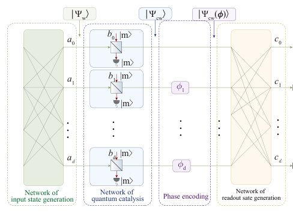
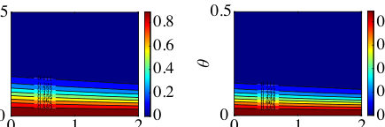
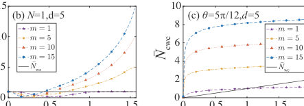
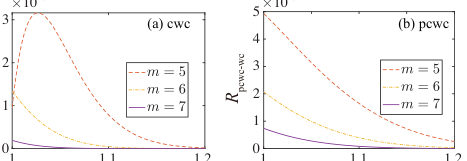
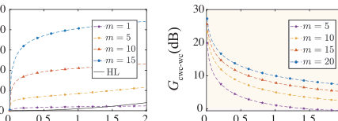
Summary. This paper proposes a method to boost the precision of distributed phase sensing by combining entanglement, squeezing, and quantum catalysis. It demonstrates that using these resources partially (on a subset of nodes) can outperform global application and that the synergy of all three resources allows for precision approaching the Heisenberg limit.
Why it may be interesting. It provides a novel strategy for distributed sensing by showing that 'partial' resource application can be more effective than 'global' application, and it identifies a counterintuitive regime where environmental loss can enhance metrological sensitivity.
Main problem. Investigating how to enhance multiphase estimation in a distributed quantum network (DQN) by synergistically combining three types of quantum resources: quantum catalysis, entanglement, and squeezing.
Main result. The integration of all three resources provides superior sensing performance approaching the Heisenberg limit, with partial quantum catalysis outperforming global catalysis by concentrating non-Gaussian resources. Additionally, a 'loss-catalysis dual-enhanced sensitivity region' is identified where moderate photon loss can actually improve sensitivity.
Method. The study uses the Quantum Fisher Information Matrix (QFIM) and Quantum Cramér-Rao Bound (QCRB) to quantify precision, alongside a proposed practical homodyne measurement scheme and an experimental protocol using Kerr nonlinear media.
Model / system. A distributed quantum network (DQN) consisting of d+1 modes (d nodes plus one reference mode) using W-type entangled states, squeezed states, and photon-catalysis modules involving beam splitters and photon-number-resolving detectors.
Key observables. Quantum Fisher Information (QFI), success probability of catalysis (Pc), gain factor (G), cooperation factor (R), and average photon number (N).
Important parameters / regimes. Number of network nodes (d), number of catalytic photons (m), beam splitter transmissivity (theta), squeezing parameter (r), and photon loss parameter (eta).
Assumptions / limitations. Assumes pure state inputs for the derivation of the catalytic operator and ideal photon-number projection measurements; the experimental protocol is noted as being relatively inefficient.
Figures summary. Fig 1: Schematic of the DQN sensing scheme; Fig 2: Success probability vs. transmissivity; Fig 3: Average photon number vs. theta and N; Fig 4: Effective QFI; Fig 6: Sensitivity gain vs. number of catalyzed modes; Fig 9: QFI and gain factor vs. m, theta, and N; Fig 14: Sensitivity enhancement vs. theta and loss; Fig 17: QFI for catalytic coherent and squeezed states; Fig 18: Experimental setup schematic.
Paper structure. The paper introduces the DQN sensing problem, defines the three quantum resources, provides the mathematical framework for multi-photon catalysis, analyzes the synergy of resources in both ideal and lossy regimes, compares global vs. partial catalysis, and concludes with an experimental implementation protocol.
We propose a theoretical scheme for quantum enhanced distributed network sensing, targeting multiphase estimation by leveraging multiple quantum resources. Specifically, we investigate the performance advantage in a distributed quantum network (DQN) for multiphase sensing by integrating three types of quantum resources(TQRs): quantum catalysis, entanglement, and squeezing. Our results reveal that employing all three TQRs leads to better sensing performance than using only two TQRs under both lossless and lossy conditions, with precision approaching the Heisenberg limit. We further demonstrate that partial quantum catalysis providesa stronger precision advantage than global catalysis in both ideal and noisy regimes. We identify a practical homodyne measurement scheme for globally and partially catalyzed multimode W type coherent states, whose measurement sensitivity can approach the corresponding quantum Cramer Rao bound. In this practical setting, partial catalysis also yields better measurement sensitivity than global catalysis. Moreover, under photon loss, both global and partial catalysis of multimode W type coherent states exhibit a loss catalysis dual enhanced sensitivity region. These findings highlight the quantum-enhanced advantages conferred by hybrid quantum resources for practical DQN sensing applications. Our work opens a way for realizing quantum-enhanced DQN sensing.
Authors: Nicolas Viaux, Ariel Norambuena, Pedro Orellana
Type: theory · Category: quantum information and computing · PDF: https://arxiv.org/pdf/2605.19117v1
Analysis basis: full PDF text, analyzed in chunks
Topic relevance: entanglement & information structure 3/5 · quantum measurements 1/5
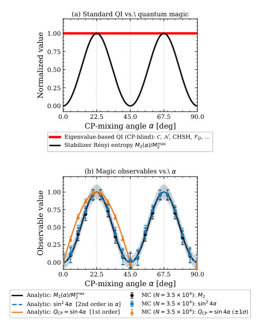
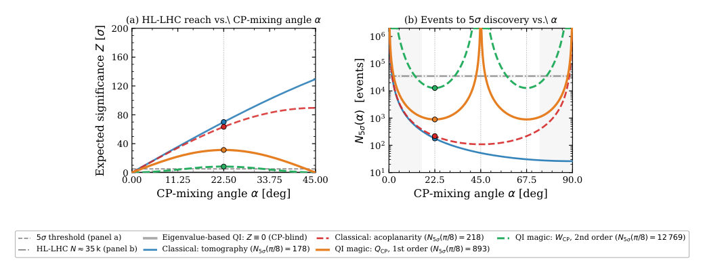
Summary. This paper demonstrates that while standard entanglement measures cannot detect CP-mixing in certain particle decays, 'stabilizer magic' provides a way to resolve the CP phase. The authors propose new quantum-information-inspired witnesses that are highly efficient for detecting CP violation at the High-Luminosity LHC.
Why it may be interesting. It bridges the gap between high-energy particle physics (CP violation) and quantum information resource theory (non-Cliffordness/magic), demonstrating how computational complexity measures can serve as physical probes for fundamental symmetries.
Main problem. Standard quantum information measures like entanglement entropy and negativity are 'CP-blind' in spin-0 to fermion-antifermion decays because the spin state remains maximally entangled regardless of the CP-mixing angle. The goal is to find an observable that can resolve the CP-induced spin phase.
Main result. The authors show that stabilizer magic (non-Cliffordness) can resolve the CP angle, specifically finding that a linear magic witness (QCP) is 14.3 times more efficient than a quartic one (WCP) for discovery at the HL-LHC.
Method. The study uses the resource theory of magic, specifically calculating the Stabilizer Renyi Entropy (SRE) and performing Monte Carlo simulations of Higgs decays at the HL-LHC.
Model / system. The system is a spin-0 particle decaying into a fermion pair (e.g., H to tau+tau-), modeled by a Lorentz-invariant Yukawa interaction with a CP-mixing angle alpha.
Key observables. Stabilizer Renyi Entropy (M2), Magic Witness WCP (quartic Pauli sum), Magic Witness QCP (linear-order amplitude), and acoplanarity angle.
Important parameters / regimes. CP-mixing angle alpha, High-Luminosity LHC (HL-LHC) event scales (approx 35,000 events), and the ultrarelativistic two-helicity limit.
Assumptions / limitations. The analysis assumes an ideal spin-0 to fermion-antifermion decay in the ultrarelativistic limit where the spin state is treated as a two-qubit system.
Figures summary. Figure 3 shows the expected discovery significance (Z) as a function of the CP-mixing angle alpha for various observables including QCP, WCP, and full tomography.
Paper structure. The paper introduces the problem of CP-blindness in entanglement measures, defines the physical system and Yukawa model, derives the closed-form Stabilizer Renyi Entropy, proposes new magic-based CP witnesses, and concludes with statistical sensitivity projections for the HL-LHC.
All standard scalar quantum-information measures -- concurrence, negativity, entanglement entropy, the optimized CHSH bound, and quantum Fisher information -- are CP-blind in ideal \ spin-0 $\to f\bar f$ decays because the two-qubit spin state is maximally entangled for every CP angle. We show that stabilizer magic, fixed in the physical Pauli frame of spin analysis, escapes this blind spot: the stabilizer Rényi entropy admits an exact closed form, vanishing at CP-definite and Clifford phases and peaking at maximal non-Clifford mixing. Two experimentally accessible, magic-inspired CP witnesses follow; the linear amplitude is $14.3\times$ more efficient than its quartic counterpart and reaches discovery-level sensitivity at the HL-LHC for $H\toτ^+τ^-$.
Authors: Tobias Rohe, Markus Baumann, Federico Harjes Ruiloba, Philipp Altmann, Gerhard Stenzel, Claudia Linnhoff-Popien
Type: theory · Category: quantum information and computing · PDF: https://arxiv.org/pdf/2605.19827v1
Analysis basis: full PDF text, analyzed in chunks
Topic relevance: entanglement & information structure 3/5
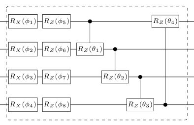
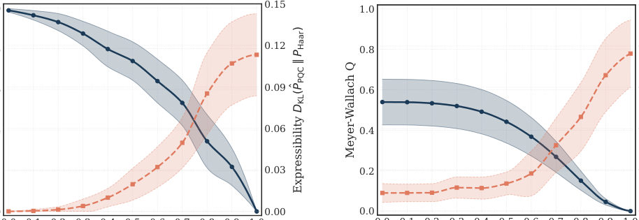
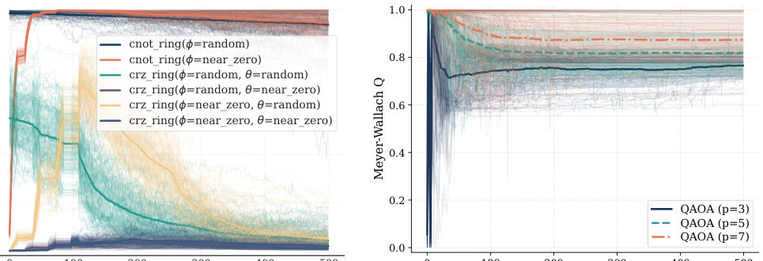
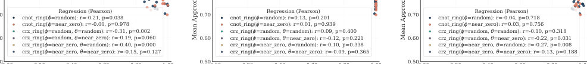
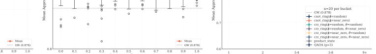
Summary. This paper demonstrates that the unstructured entanglement found in standard hardware-efficient quantum circuits actually hinders the optimization of combinatorial problems. It shows that while the optimizer tries to suppress this 'agnostic' entanglement, successful algorithms like QAOA rely on entanglement that is specifically structured to match the problem's symmetry.
Why it may be interesting. not directly relevant
Main problem. Investigating whether the entanglement present in Hardware-Efficient Ansätze (HEAs) helps or hinders the variational search for combinatorial optimization problems like MaxCut.
Main result. Problem-agnostic entanglement in HEAs is detrimental to performance, as the optimizer actively drives entanglement down to improve results; conversely, QAOA succeeds because its entanglement is structurally aligned with the problem Hamiltonian.
Method. The authors use two control mechanisms—CNOT gate deletion and CRZ parameter restriction—to monotonically reduce entanglement in HEAs and compare their performance against QAOA and product-state baselines.
Model / system. The study focuses on the MaxCut combinatorial optimization problem, modeled using a diagonal Ising Hamiltonian on Erdős–Rényi random graphs.
Key observables. Meyer-Wallach entanglement measure (Q), approximation ratio (alpha), KL divergence (expressibility), and entanglement trajectories Q(t).
Important parameters / regimes. Number of qubits (n=12), number of layers (p), edge density (p), and entanglement control factors (delta and rho).
Assumptions / limitations. The study assumes that for diagonal Hamiltonians, any entanglement in the final state represents a deviation from the target classical product state.
Figures summary. Figures validate entanglement control via gate deletion and parameter restriction, show the evolution of entanglement trajectories during training, and demonstrate the monotonic correlation between reduced entanglement and improved approximation ratios in HEAs.
Paper structure. The paper introduces the problem of entanglement in HEAs, presents new mechanisms for controlling entanglement, validates these mechanisms, compares HEA and QAOA performance, and concludes with a recommendation for problem-structured ansatz design.
Variational quantum algorithms (VQAs) for combinatorial optimization routinely employ entangling gates as a default design choice, yet the role of entanglement, in its amount and structure, remains poorly understood. This gap is particularly consequential for problems governed by diagonal Hamiltonians, whose ground states are classical product states and therefore require no entanglement in principle, raising the fundamental question of whether and how entangling gates help or hinder the variational search. We investigate this question for MaxCut by introducing two complementary control mechanisms that provide smooth, monotonic control over hardware-efficient ansatz (HEA) entanglement as quantified by the Meyer-Wallach measure $Q$, and by benchmarking against QAOA as a problem-structured reference. Tracking the entanglement trajectory $Q(t)$ throughout VQA training reveals that when the ansatz grants the optimizer indirect control over entanglement through its parameters, it consistently drives entanglement down. In line with this tendency, a fully separable ansatz outperforms all entangled hardware-efficient configurations, establishing a monotonic relationship: less problem-agnostic entanglement yields better performance. In contrast, QAOA, whose entanglement is structurally derived from the problem Hamiltonian, maintains high entanglement yet achieves competitive solution quality, demonstrating that entanglement structure, not merely quantity, determines its utility. These findings suggest that HEAs for diagonal Hamiltonians are inappropriate and that variational approaches to combinatorial optimization should prioritize problem-structured circuit designs.
Authors: Mitsuki Odahara, Shinsuke Haze
Type: experiment · Category: other · PDF: https://arxiv.org/pdf/2605.19466v1
Analysis basis: full PDF text, analyzed in chunks
Topic relevance: QC/QI experiment 2/5 · Rydberg arrays 2/5 · quantum measurements 2/5 · quantum optics experiment 2/5
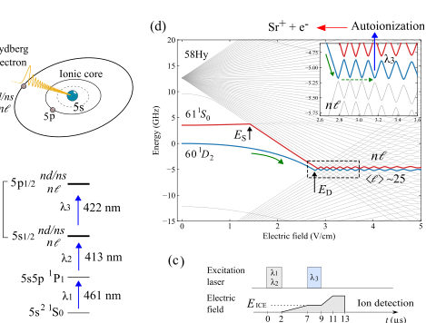
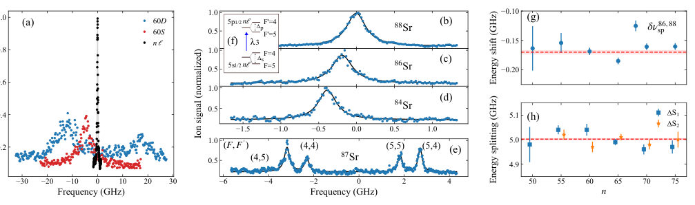
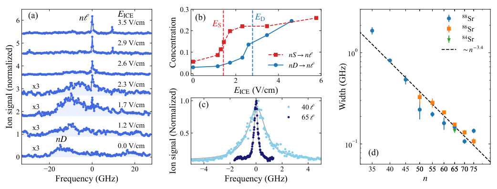
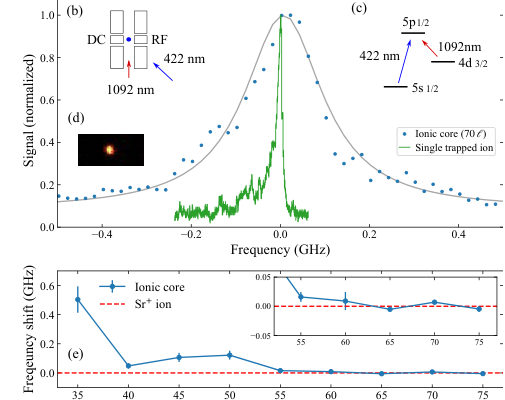
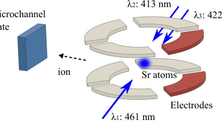
Summary. This paper presents a method to perform high-precision spectroscopy on the internal transitions of strontium ionic cores within Rydberg atoms. By using electric fields to drive the outer electron into high-angular-momentum orbits, the researchers suppressed autoionization and achieved unprecedented spectral resolution. This allows for the precise measurement of isotope shifts and hyperfine structures, providing a foundation for using core transitions as sensitive probes in atomic physics.
Why it may be interesting. This work demonstrates a powerful technique for quantum control of inner-core transitions, which can be used as a sensitive probe for electron-core interactions and as a tool for manipulating Rydberg atoms in quantum information applications.
Main problem. The difficulty of performing precision spectroscopy on ionic-core transitions in alkaline-earth Rydberg atoms due to spectral broadening and frequency shifts caused by autoionization and perturbations from the outer electron.
Main result. The researchers achieved a reduction in linewidth by over two orders of magnitude using dynamical control of the Rydberg electron's orbit, enabling high-resolution measurements of isotope shifts and hyperfine splitting that match known values for bare ions.
Method. The team used an electric-field pulse with a linear ramp to transfer population from low-l to high-l Rydberg states, effectively decoupling the core from the outer electron, and compared the results to a single trapped ion frequency reference.
Model / system. The experimental platform involves ultracold strontium isotopes (84, 86, 87, and 88Sr) in a magneto-optical trap, utilizing a three-laser excitation scheme and a Paul trap for a single Sr+ ion reference.
Key observables. Isotope shifts, hyperfine splitting, linewidth scaling, and frequency shifts of the ionic-core transitions.
Important parameters / regimes. Principal quantum number (n=45-75), orbital angular momentum (l), electric field strength (E_ICE), and linewidth reduction of >2 orders of magnitude.
Assumptions / limitations. The ionic core is assumed to be effectively isolated and behave like a bare ion when the electron is in high-l states.
Figures summary. Figure 1 shows a schematic of the Rydberg electron and core; Figure 4 compares the core spectrum to a single-ion signal; Figure 5 depicts the experimental setup; Figure 6 presents a calculated Stark map near the 60D state.
Paper structure. The paper introduces the problem of core-electron interaction, describes the experimental setup and the dynamical control method, presents the results for isotope shifts and hyperfine splitting, validates the accuracy against trapped ions, and discusses linewidth scaling and future implications.
We report precision spectroscopy of ionic-core transitions in alkaline-earth Rydberg atoms. We demonstrate high-resolution measurements of isotope shifts and hyperfine splitting of dipole transitions in ionic cores which have not been explored so far. A key element of this work is the reduction of the linewidth by more than two orders of magnitude enabled by dynamical control of Rydberg electron's orbit which significantly enhances the spectral resolution. Furthermore, to unambiguously identify the frequency shift, we directly compare core ion's spectrum with a signal from a single trapped ion serving as an ultimate frequency reference. This work provides an important foundation for quantum control of inner-core transitions, which offer an useful tool in manipulating Rydberg atom as well as a sensitive probe for electron-core interactions in atomic and molecular systems.
Authors: Maria Popławska, Marcin Jarzyna
Type: theory · Category: quantum information and computing · PDF: https://arxiv.org/pdf/2605.19749v1
Analysis basis: full PDF text, analyzed in chunks
Topic relevance: correlated / nonlocal dissipation 2/5 · entanglement & information structure 2/5 · quantum measurements 2/5
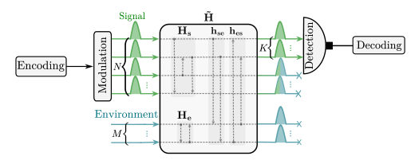
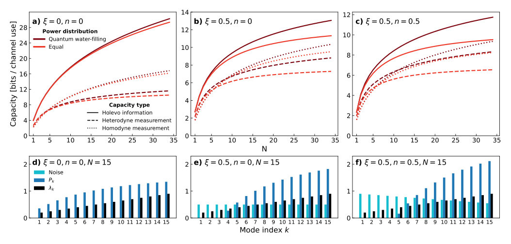
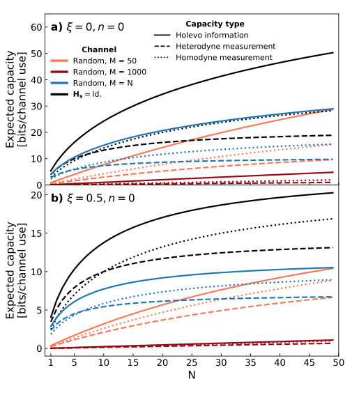
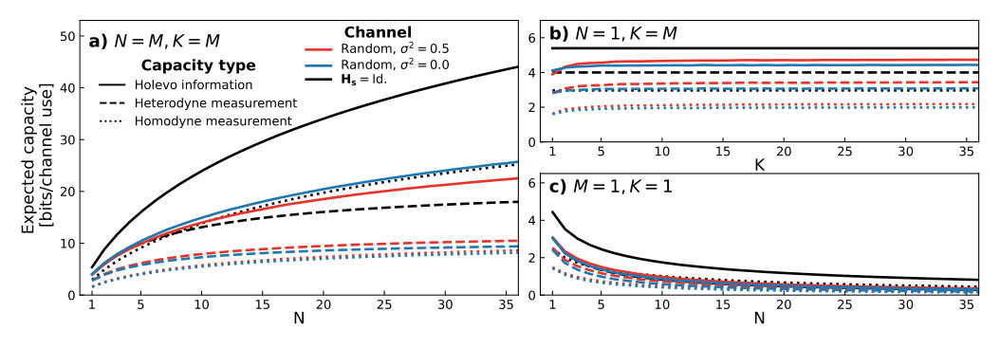
Summary. This paper provides explicit analytical formulas for the capacity of multi-mode quantum Gaussian channels, serving as a quantum analogue to classical MIMO systems. It demonstrates that increasing the number of modes improves capacity and provides exact results for random scattering scenarios. The study also compares the performance of different detection strategies like homodyne and heterodyne in the presence of noise.
Why it may be interesting. This work is highly relevant to quantum optics and open quantum systems as it provides fundamental limits for multi-mode Gaussian communication and explores the impact of environmental coupling and random scattering on quantum information transmission.
Main problem. Determining the information capacity of multi-mode quantum Gaussian channels, specifically for optical MIMO systems, and analyzing how capacity scales with mode number and noise.
Main result. The authors show that increasing the number of modes under a fixed power constraint always enhances capacity, and they derive analytical formulas for the ensemble-averaged Holevo, homodyne, and heterodyne capacities in random passive and weakly active channels.
Method. The study uses quantum information theory (Holevo bound), Singular Value Decomposition (SVD) to decompose channels into subchannels, and Random Matrix Theory (Jacobi ensemble) to calculate expected capacities for random transformations.
Model / system. The model consists of bosonic Gaussian quantum channels representing optical communication links, involving signal modes, receiver modes, and environmental modes subject to passive (beam-splitting) or phase-insensitive (amplification) transformations.
Key observables. Holevo capacity, homodyne detection capacity, and heterodyne detection capacity.
Important parameters / regimes. Number of modes (N, K, M), input power constraint (P), transmission coefficients, thermal photon number (n), and additive noise (xi).
Assumptions / limitations. The analysis focuses on Gaussian states and channels, assumes minimal noise required by quantum mechanics, and treats active transformations as weak perturbations.
Figures summary. Figure 1 shows a schematic of the communication link; Figure 2 compares different detection capacities and power distributions under various noise scenarios; Figure 3 shows expected capacity for random passive channels; Figure 4 illustrates the impact of squeezing variance in active channels.
Paper structure. The paper introduces the multi-mode Gaussian channel model, derives capacity formulas using SVD and water-filling, extends the analysis to random passive transformations using the Jacobi ensemble, and finally discusses the effects of weak active transformations.
We derive explicit formulas for the capacity of multimode quantum Gaussian channels which serve as a fundamental model for optical version of multiple-input multiple-output channels. We show that it is always optimal to increase the number of modes under fixed power constraint. We derive an analytical formula for the ensemble-averaged Holevo capacity in the case of random passive transformations. The analogous results are also obtained for capacities achievable under homodyne and heterodyne detection. We further discuss the generalization of the model to include weak active transformations.
Authors: Richard Huang, David R. Nelson
Type: theory · Category: disordered systems and neural networks · PDF: https://arxiv.org/pdf/2605.19072v1
Analysis basis: full PDF text, analyzed in chunks
Topic relevance: driven-dissipative phase transition 2/5 · non-equilibrium dynamics 2/5
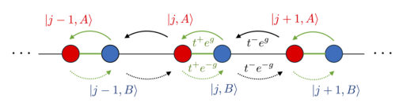
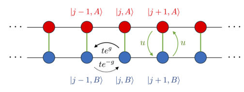
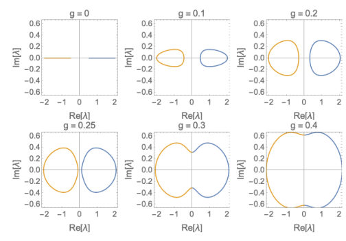
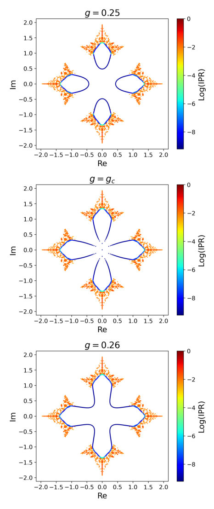
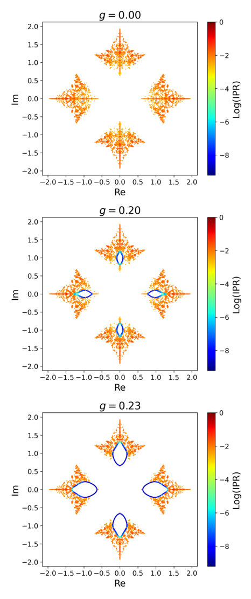
Summary. This paper explores how directional bias and random sign disorder compete to shape the complex spectra of non-Hermitian random matrices. It demonstrates that while disorder promotes localization, bias drives delocalization, leading to complex structures like loops of extended states and the persistence of special eigenvalue degeneracies.
Why it may be interesting. The study of non-Hermitian degeneracies (exceptional and diabolic points) and the transition between localized and extended states is highly relevant to understanding non-equilibrium dynamics and skin effects in open quantum systems.
Main problem. The study investigates the interplay between directional bias, random sign disorder, and eigenvalue degeneracies in multi-banded non-Hermitian random matrices.
Main result. The authors find that directional bias drives a delocalization transition, creating loops of extended states in the complex plane, and that special degeneracies (exceptional and diabolic points) persist under disorder.
Method. The researchers use transfer matrix formalism, Lyapunov exponents, direct numerical diagonalization, and singular value analysis.
Model / system. The models are inspired by sparse neural networks with 1D circular topology, specifically a non-Hermitian SSH chain and a non-Hermimian ladder model featuring random sign disorder (Dale's Law).
Key observables. Eigenvalue spectrum (distribution and symmetry), localization/delocalization (via IPR and Lyapunov exponents), and types of degeneracies (exceptional vs. diabolic points).
Important parameters / regimes. Directional bias (g), random sign disorder (sigma), hopping strengths (t+, t-, u, t), and boundary conditions (periodic vs. open).
Assumptions / limitations. The connectivity follows a 1D topology, neurons are purely excitatory or inhibitory (Dale's Law), and the diagonal elements of the connectivity matrix are zero.
Figures summary. Schematics of the SSH and ladder models; eigenspectra of pure and disordered chains showing gap closing and degeneracy; plots of localization/delocalization via IPR and Lyapunov exponents; and comparison of periodic vs. open boundary conditions.
Paper structure. The paper introduces models inspired by neural networks, analyzes the spectral properties and degeneracies of the pure models, extends the study to include random sign disorder, compares the delocalization dynamics of the SSH and ladder models, and discusses the effects of different boundary conditions.
We study two-banded, non-Hermitian random matrices inspired by sparse neural networks with a circular, 1d topology. We focus on two paradigmatic models, an SSH chain and a ladder model, which have both non-Hermitian directional bias and random sign disorder in the hoppings. The random sign disorder, which follows Dale's Law, leads to localization of the eigenstates, while the directional bias drives a delocalization transition in these states. The competition between disorder and directional bias results in rich eigenspectra with loops of extended states in the complex plane surrounded by regions of localized ones, and the eigenvalues are all confined to an annular region. Furthermore, the distinct band structures of the SSH chain and ladder model lead to different delocalization phenomena. Even in the absence of disorder, tuning the directional bias can lead to an eigenvalue degeneracy, which is an exceptional point for the SSH chain but a diabolic point for the ladder. In the presence of the disorder, these special eigenvalue degeneracies are preserved and also highlight key stages in the delocalization process. For both models, increasing the directional bias initially delocalizes states starting from within the bands. For the SSH chain, for large enough directional bias, the delocalized states open up a hole in the spectrum in the complex plane, similar to prior results for single band systems. But for the ladder model, as the directional bias is increased, the states delocalize in two stages, leading to two separate loops of extended states with localized states in between. The precise contours on which the extended states reside can be predicted from the Lyapunov exponents associated with products of random transfer matrices, in agreement with direct numerical diagonalization. Although we focus on periodic boundaries, results are discussed for open boundaries as well.
Authors: Andrea Calcinari, Adrià Delhom, Daniele Oriti
Type: theory · Category: quantum gases · PDF: https://arxiv.org/pdf/2605.18977v1
Analysis basis: full PDF text, analyzed in chunks
Topic relevance: Keldysh / 2PI / non-Gaussian methods 2/5 · analog quantum simulation 2/5
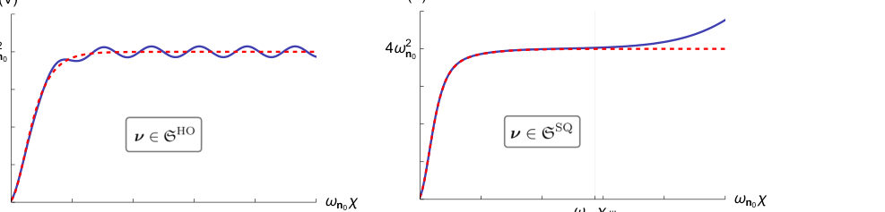
Summary. This paper applies the Bogolyubov theory of Bose-Einstein condensates to Group Field Theory to study quantum fluctuations in emergent spacetime. It identifies a new class of collective excitations called 'bogolons' that arise from interactions between atoms of geometry. These excitations provide the leading-order corrections to the expansion dynamics of the emergent universe.
Why it may be interesting. The paper provides a direct mathematical bridge between the physics of ultracold BECs and quantum gravity, using the Bogolyubov formalism to describe how many-body collective modes (phonons) can manifest as macroscopic geometric features in an emergent spacetime.
Main problem. Understanding how quantum fluctuations and beyond-mean-field effects influence the emergence of continuous spacetime from discrete quantum-geometric degrees of freedom.
Main result. The authors demonstrate that interactions in a Group Field Theory (GFT) condensate lead to collective excitations, termed 'quantum-gravity bogolons,' and quantum depletion, which provide perturbative corrections to the emergent Friedmann cosmological dynamics.
Method. The study employs Bogolyubov theory, importing many-body techniques from Bose-Einstein Condensate (BEC) physics to a second-quantized GFT framework, including Bogolyubov transformations and Bloch-Floquet theory for mode diagonalization.
Model / system. A deparametrised Abelian Group Field Theory (GFT) model over $U(1)^4$ where spacetime is viewed as a hydrodynamic phase of 'atoms of geometry.' The dynamics are governed by a relational Hamiltonian using a massless scalar field as a clock.
Key observables. Macroscopic volume observable, quantum depletion, and collective excitations (bogolons).
Important parameters / regimes. Interaction coupling constant (lambda), number of atoms in the condensate, squeezing intensity rate, and the relational time (clock) variable.
Assumptions / limitations. The analysis assumes a weakly interacting, dilute regime, a simplified Abelian group structure, and that the kinetic couplings are invariant within specific mode chains.
Figures summary. Figure 1 shows the interaction structure and coupling of modes in chains; Figure 3 visualizes the bi-chain structure of interacting modes generated by group involutions; Figure 4 is not described.
Paper structure. The paper progresses from the general problem of spacetime emergence to a specific GFT model, implements Bogolyubov theory to study fluctuations, derives the diagonalization of the interacting Hamiltonian, and finally quantifies corrections to cosmological observables.
A central open problem in quantum gravity is to understand how continuum spacetime emerges from quantum-geometric degrees of freedom in a background-independent setting. A many-body perspective suggests that spacetime emerges as a hydrodynamic phase of many atoms of quantum geometry. This idea underlies several approaches to quantum gravity, and it has been explicitly realised in the group field theory formalism. However, quantum fluctuations beyond the mean-field regime remain largely unexplored. We fill this gap by importing Bogolyubov theory to quantum gravity condensates, showing that leading beyond-mean-field effects manifest as collective excitations, in direct analogy with phonons in laboratory BECs. We implement the construction in a tractable group field theory model, where condensates of quantum-geometric atoms reproduce nonsingular expanding cosmologies, and derive the leading beyond-mean-field corrections to the emergent Friedmann dynamics. These results identify a new class of quantum-gravity excitations and establish a controlled bridge between microscopic quantum-gravitational dynamics, many-body collective phenomena, and signatures of spacetime emergence.
Authors: Maxence Arutkin, Alexandre Vallée
Type: theory · Category: statistical mechanics · PDF: https://arxiv.org/pdf/2605.19464v1
Analysis basis: full PDF text, analyzed in chunks
Topic relevance: non-equilibrium dynamics 2/5 · non-equilibrium universality 2/5
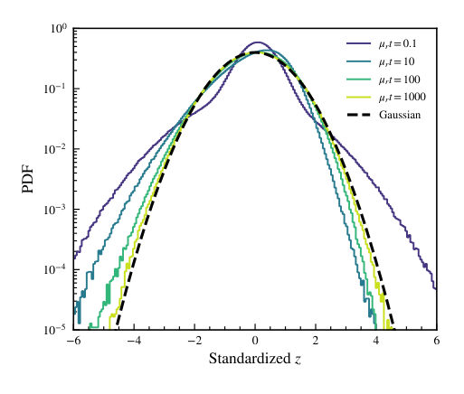
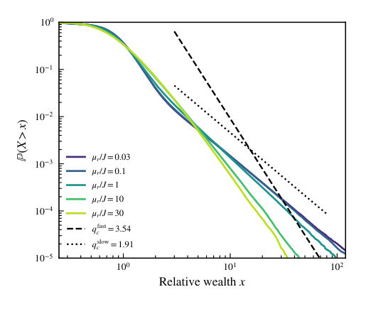
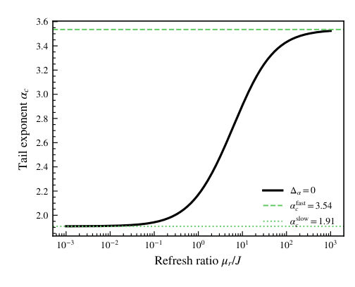
Summary. This paper extends the Bouchaud-Mezard model by allowing the volatility of growth to fluctuate over time. It demonstrates that these fluctuations fundamentally change the power-law exponent of the wealth distribution, meaning the frequency of volatility changes is just as important as the average volatility itself.
Why it may be interesting. not directly relevant
Main problem. Investigating how fluctuations in volatility (diffusing diffusivity) affect the stationary Pareto tail exponent in random multiplicative growth models with redistribution.
Main result. The stationary Pareto tail exponent is selected by the full statistics of the diffusivity process rather than just its mean, with the exponent interpolating between a high-diffusivity slow-refresh limit and a mean-diffusivity fast-refresh limit.
Method. The authors use Itô's formula for logarithmic transformation, a Fokker-Planck approach for the joint density, and a determinant method to find the roots of the amplitude matrix for the tail exponent.
Model / system. A many-agent system undergoing random multiplicative growth with a mean-field redistribution mechanism, where the diffusivity (volatility) is a stochastic process that changes at discrete jump times.
Key observables. Pareto tail exponent (alpha), log-returns, and wealth distribution.
Important parameters / regimes. Redistribution rate (J), diffusivity refresh rate (mu_r), drift (m), and diffusivity states (D_low, D_high).
Assumptions / limitations. Assumes independence of diffusivity across agents (mean-field approximation) and all-to-all connectivity for redistribution.
Figures summary. Figure 3 shows the stationary Pareto exponent as a function of the refresh ratio, demonstrating a continuous transition between the slow-refresh and fast-refresh limits.
Paper structure. The paper introduces the limitation of constant noise models, analyzes single-agent dynamics (short-time vs long-time), develops the many-agent Fokker-Planck framework, derives the tail exponent via the determinant method, and evaluates the asymptotic limits.
Random multiplicative growth with redistribution generates stationary Pareto wealth tails in the Bouchaud-Mézard model, but assumes a fixed multiplicative noise intensity. This is restrictive for physical and financial growth processes, where volatility (diffusivity) is often fluctuating. We replace the constant noise intensity by a diffusing diffusivity and ask how these fluctuations select the Pareto stationary tail. For a geometric Brownian motion with diffusing diffusivity, the effect is transient: log-returns show non-Gaussian short-time statistics but self-average to a Gaussian form at long times. With redistribution, the same persistence becomes stationary. Agents remaining in high-diffusivity states dominate rare large-wealth events, so the Pareto exponent is not obtained by replacing the diffusivity by its mean. For a two-state diffusivity, an exact tail analysis gives a Pareto exponent interpolating between the high-diffusivity slow-refresh limit and the mean-diffusivity fast-refresh Bouchaud-Mézard limit.
Authors: Dawit Hiluf Hailu
Type: theory · Category: quantum information and computing · PDF: https://arxiv.org/pdf/2605.19273v1
Analysis basis: full PDF text, analyzed in chunks
Topic relevance: methods for driven-dissipative 2/5 · non-equilibrium dynamics 2/5
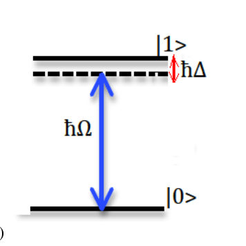
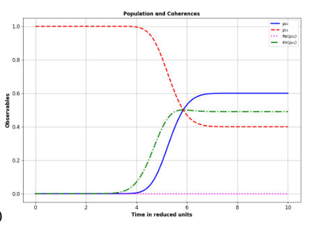
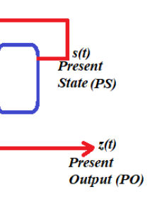
Summary. The paper proposes using the controlled dynamics of atomic systems, such as rare-earth-doped crystals, to implement classical finite-state logic like parity checkers. By mapping quantum state evolution to logic gates, it suggests a scalable computing model that could potentially offer polynomial complexity advantages over traditional classical architectures.
Why it may be interesting. It bridges classical automata theory with quantum control, offering a way to use the intrinsic dynamics of open quantum systems (like rare-earth ions) for logic operations, which is highly relevant for quantum optics and quantum information processing.
Main problem. Developing an alternative computing paradigm to overcome the physical limits of semiconductor miniaturization by implementing classical Finite State Machines (FSM) using the dynamics of atomic systems.
Main result. Demonstrated that the continuous dynamics of a two-level (and scalable N-level) atomic system can emulate a Parity Checker FSM, with a potential reduction in computational complexity from exponential to polynomial.
Method. Used the Liouville equation, Wei-Norman method, and Sylvester formula to derive analytical solutions for the density matrix evolution, mapping quantum state transitions to classical logic truth tables.
Model / system. A two-level and N-level quantum system, specifically referencing rare-earth ions like Pr3+ doped in Y2SiO5, driven by time-dependent laser pulses (Gaussian profile) under the Rotating Wave Approximation.
Key observables. Density matrix population (diagonal elements) and coherence (off-diagonal elements) of the Bloch vector.
Important parameters / regimes. Rabi frequency (Omega), detuning (Delta), pulse area (pi/2), and coherence/decoherence time scales.
Assumptions / limitations. The system is treated as a two-level or N-level system; the output does not depend directly on the input (D=0); and the computation occurs faster than the decoherence rate.
Figures summary. Figure 1 shows the energy level diagram of Pr:YSO and its two-level representation; Figure 2 shows the numerical time evolution of populations and coherences for different initial states.
Paper structure. The paper introduces the post-Moore's Law motivation, proposes the FSM-atomic dynamics mapping, provides the mathematical framework for two-level and N-level systems, demonstrates a Parity Checker implementation, and discusses scalability and noise mitigation.
Following the success of Moore's predictions, we are approaching a limit in the miniaturization of semiconductors for computing materials. This has led to the exploration of various research paths to develop alternative computing paradigms, such as quantum computing, 3D transistors, molecular logic, and continuous logic. In this context, we propose a novel approach in which the dynamics of a two-level atom is used to execute classical Boolean logic operations. Unlike traditional combinational logic circuits, where the output depends solely on the input, we suggest a finite-state machine-like computing model, where the output is influenced by both the input and the system's initial state. The proposed mechanism leverages the dynamics of a two-level quantum state, with information encoded in observable quantities. These observables, the density matrix's population (diagonal) and coherence (off-diagonal) elements, were analyzed using the Liouville equation. The selection of observables within the Liouville space allows us to encode more variables. Although environmental noise may cause some loss of encoded information, fast computations can still be performed before it dissipates. In addition, logic operations can be read in parallel, enabling complex computations. This system can also be scaled to an N-level configuration.
Authors: Junsong Sun, Huaiming Guo, Bohm-Jung Yang
Type: theory · Category: other · PDF: https://arxiv.org/pdf/2605.19272v1
Analysis basis: full PDF text, analyzed in chunks
Topic relevance: methods for driven-dissipative 2/5 · non-equilibrium dynamics 2/5
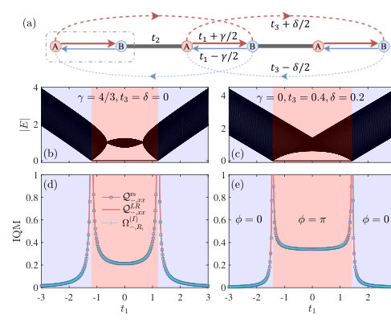
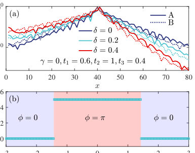
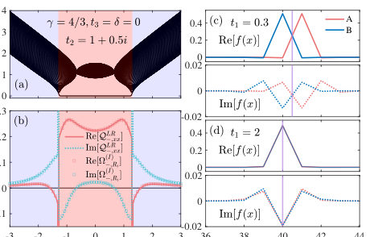
Summary. This paper establishes a unified framework for quantum geometry in non-Hermitian systems under open boundary conditions. It proves that the real-space integrated quantum metric is equivalent to the non-Bloch version defined on the generalized Brillouin zone. The results link the non-Bloch quantum metric to the spatial localization of Wannier functions in the presence of the non-Hermitian skin effect.
Why it may be interesting. This work provides a fundamental mathematical bridge between real-space localization and momentum-space geometry in non-Hermitian systems, which is crucial for understanding open quantum systems and non-equilibrium dynamics.
Main problem. Developing a unified theory of quantum geometry for non-Hermitian systems under open boundary conditions, specifically addressing the breakdown of Bloch band theory due to the non-Hermitian skin effect.
Main result. The authors prove an exact equivalence between the real-space integrated quantum metric and the non-Bloch integrated quantum metric defined on the generalized Brillouin zone, and show that the latter represents the gauge-invariant part of the Wannier function spread functional.
Method. The study utilizes the non-Bloch band theory framework, employing the Generalized Brillouin Zone (GBZ) and biorthogonal basis construction to relate real-space properties to non-Bloch representations.
Model / system. A 1D non-Hermitian Su-Schrieffer-Heeger (SSH) model featuring nonreciprocal hopping and long-range nonreciprocal hopping under open boundary conditions.
Key observables. Integrated Quantum Metric (IQM), non-Bloch Berry phase, Wannier center, and Wannier spread functional.
Important parameters / regimes. Hopping parameters (t1, t2, t3), nonreciprocal/asymmetry parameters (gamma, delta), and the Generalized Brillouin Zone (GBZ) radius.
Assumptions / limitations. The analysis focuses on the long-chain limit to ensure the wavefunction vanishes at the boundaries.
Figures summary. Figure 1 shows the SSH model schematic, energy spectra, and IQM comparison; Figure 2 displays asymmetric Wannier function profiles and Wannier center shifts; Figure 3 shows energy spectra for phase identification; Supplemental figures illustrate GBZ shapes and spatial distributions of the biorthogonal product.
Paper structure. The paper introduces the non-Hermitian SSH model, establishes the mathematical equivalence between real-space and non-Bloch quantum metrics, analyzes the localization properties of non-Bloch Wannier functions, and concludes with the relationship between the spread functional and the skin effect.
We formulate quantum geometry for non-Hermitian systems under open boundary conditions. By defining quantum-geometric quantities in both real-space and non-Bloch representations, we establish a unified framework beyond conventional Bloch band theory. Our central result is an exact equivalence between the real-space integrated quantum metric and a non-Bloch integrated quantum metric defined on the generalized Brillouin zone. We further introduce localized non-Bloch Wannier functions in the presence of the non-Hermitian skin effect and show that the non-Bloch integrated quantum metric gives the gauge-invariant part of their spread functional. These results establish quantum geometry as a natural framework for characterizing open-boundary non-Hermitian band structures and the localization properties encoded in skin modes.
Authors: LI Zhenpeng
Type: theory · Category: disordered systems and neural networks · PDF: https://arxiv.org/pdf/2605.19785v1
Analysis basis: full PDF text, analyzed in chunks
Topic relevance: non-equilibrium dynamics 2/5 · non-equilibrium universality 2/5



Summary. This paper demonstrates that there is an optimal memory time for a random walker to efficiently navigate complex energy landscapes. By tuning this persistence time, one can detect hidden topological transitions and spectral crossovers in spin glass models.
Why it may be interesting. not directly relevant
Main problem. Investigating how a persistent random walker explores complex energy landscapes and determining if an optimal persistence time exists to maximize exploration efficiency and reveal hidden topological transitions.
Main result. The exploration efficiency follows an inverted-U profile, where an optimal persistence time (tau_p*) reveals the landscape's topology; this optimal time undergoes a sharp transition driven by system size and temperature-dependent crossovers.
Method. Numerical simulations of underdamped Langevin dynamics combined with an analytical Renormalization Group (RG) framework and Random Matrix Theory (RMT) to model the canyon-finding rate.
Model / system. A p=2 spherical spin glass model with a Hamiltonian defined by a Gaussian Orthogonal Ensemble (GOE) matrix, subject to underdamped Langevin dynamics on a sphere.
Key observables. Canyon-finding rate (Gamma), optimal persistence time (tau_p*), effective canyon width (xi_eff), and mean level spacing (delta_lambda).
Important parameters / regimes. Persistence time (tau_p), temperature (T), system size (N), and the spectral gap (delta_lambda).
Assumptions / limitations. The landscape is modeled using GOE statistics, and the efficiency is modeled as a competition between boundary scanning and canyon crossing processes.
Figures summary. The notes imply figures showing the inverted-U profile of the canyon-finding rate, the jump in optimal persistence at N=128, and the scaling of efficiency with temperature.
Paper structure. The paper introduces the problem of landscape exploration, defines the spherical spin glass model and Langevin dynamics, presents the numerical results for efficiency profiles across different N and T, provides an analytical derivation using RG and RMT, and concludes with the general principle of optimal persistence.
Infinite persistence marks the topological transition. For finite persistence, the canyon-finding rate Gamma(tau_p) on the p=2 spherical spin glass forms an inverted-U profile, peaking at an optimal tau_p^. At low temperature (T=0.05), tau_p^ drops from 10 to 5 as N increases through 128, marking the discrete-to-quasi-continuous GOE crossover. For N=1024, the peak is flat between tau_p=5 and 6 within statistical uncertainties, preventing a more precise determination. For N>=128, the canyon width saturates at xi_eff=1, consistent with the measured tau_p^=5 when beta=0.4. At higher temperatures (T>=0.15), tau_p^=10 and beta(T) scales as 1/T, with temperature dependence entering only through v_th = sqrt(2T). For T=0.10 and N>=128, high-resolution scans give tau_p^=8.0; for N<=64 at the same temperature, coarse scans place tau_p^ in the range 8-10. Thus, optimal persistence reveals the hidden topology of the landscape-a principle expected to be generic in disordered landscapes with entropic bottlenecks.
Authors: Paul Brehmer, Lander Burgelman, Zheng-Yuan Yue, Gleb Fedorovich, Jutho Haegeman, Lukas Devos
Type: theory · Category: numerical methods · PDF: https://arxiv.org/pdf/2605.19960v1
Analysis basis: full PDF text, analyzed in chunks
Topic relevance: entanglement & information structure 2/5 · non-equilibrium dynamics 2/5
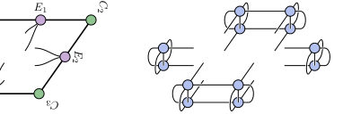
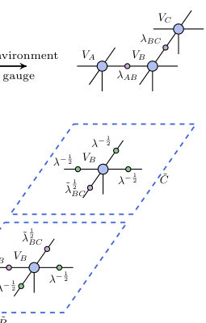
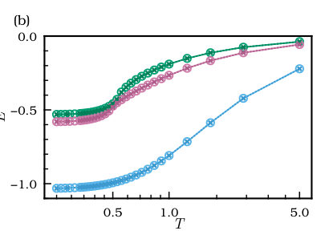
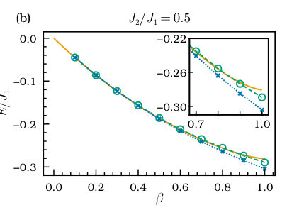
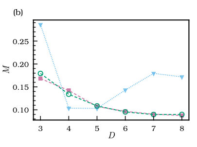
Summary. The paper introduces PEPSKit.jl, a new Julia-based software package for simulating 2D quantum many-body systems using infinite projected entangled-pair states. It integrates advanced features like non-Abelian symmetries, automatic differentiation for optimization, and support for fermionic systems. The package aims to lower the entry barrier for researchers by providing a high-level, efficient, and composable framework for tensor network simulations.
Why it may be interesting. It provides a highly accessible, modern tool for many-body dynamics and ground-state studies, specifically leveraging Automatic Differentiation to simplify the implementation of complex variational algorithms in 2D.
Main problem. The exponential growth of the Hilbert space in 2D quantum many-body systems makes exact simulations computationally prohibitive, and the high software barrier in the iPEPS field slows algorithmic development.
Main result. The authors present PEPSKit.jl, a Julia package that provides a unified, optimized framework for iPEPS simulations, demonstrating significant speedups via non-Abelian symmetries and successful validation against established benchmarks.
Method. The package utilizes infinite Projected Entangled-Pair States (iPEPS) with contraction via CTMRG or boundary-MPS, employing Automatic Differentiation (AD) for variational ground-state optimization and Trotter-based time evolution.
Model / system. The framework targets 2D quantum many-body systems in the thermodynamic limit, including spin models (e.g., $J_1$-$J_2$ model) and fermionic models (e.g., Fermi-Hubbard model) on square and triangular lattices.
Key observables. Energy per site, magnetization, transverse magnetization, and traces of operators.
Important parameters / regimes. Bond dimension (D for iPEPS, chi for environment), physical dimension (d), temperature (beta), and interaction strengths (e.g., $J_2/J_1$, $U/t$).
Assumptions / limitations. The current release is limited to finite-range Hamiltonians on square 2D lattices, and 2D tensor network contraction remains inherently approximate.
Figures summary. Figure 1 shows different bond environment approximations (SU, FU, NTU); Figure 2 illustrates a truncation procedure; Figures 3-5 compare package results for the Ising and $J_1$-$J_2$ models against TeNeS and HTSE; Figure 7 shows magnetization in the Fermi-Hubbard model; Figure 8 benchmarks CTMRG speedup using different symmetries.
Paper structure. The paper introduces the computational challenges of 2D systems, presents the PEPSKit.jl package features and technical implementation (AD, symmetries, contraction), validates the package through various physical models, and provides performance benchmarks for symmetry-based speedups.
We present PEPSKit.jl, a Julia package for simulating two-dimensional quantum many-body systems with infinite projected entangled-pair states (iPEPS). PEPSKit.jl builds on the TensorKit.jl package for tensor computations and provides high-level algorithms for iPEPS simulations that support both Abelian and non-Abelian symmetries, as well as fermionic systems. This work gives an overview of the main package features, which include support for ground-state, time-evolution, and finite-temperature simulations in systems with different physical symmetries and lattice geometries. These capabilities are illustrated through various examples and technical benchmarks.
Authors: Jaime M. Moya, Scott B. Lee, Sudipta Chatterjee, Nitish Mathur, Grigorii Skorupskii, Connor J. Pollak, Leslie M. Schoop
Type: experiment · Category: strongly correlated electrons · PDF: https://arxiv.org/pdf/2605.20020v1
Analysis basis: full PDF text, analyzed in chunks
Topic relevance: Kondo & dissipative impurity 2/5 · non-equilibrium dynamics 1/5 · scars & prethermalization 1/5
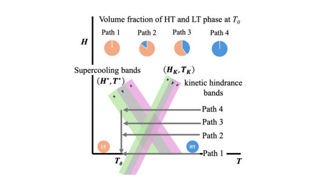
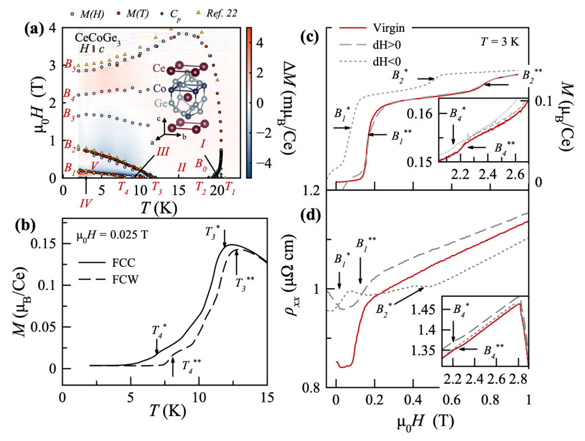
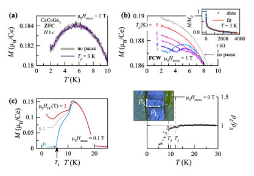
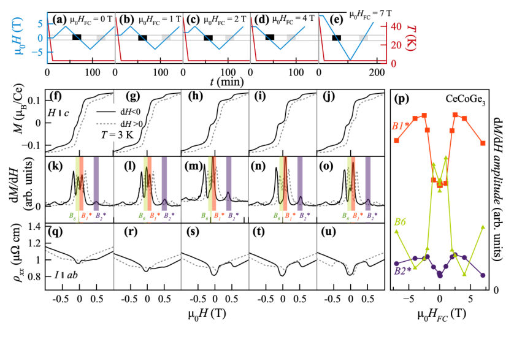
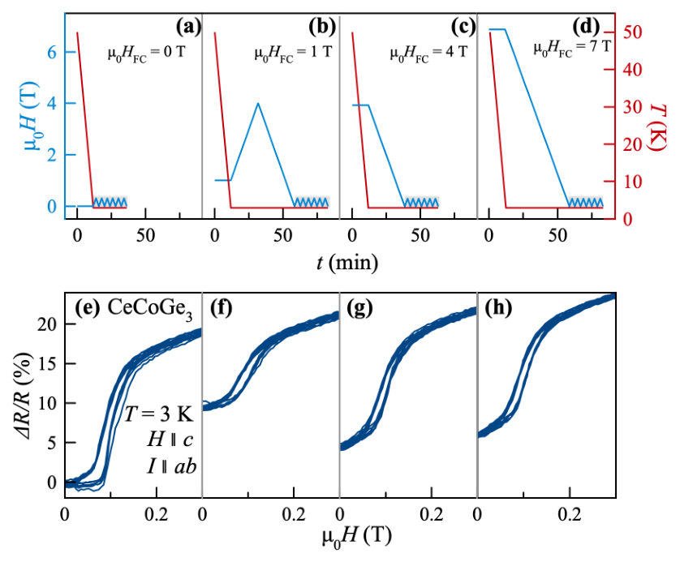
Summary. This paper identifies a mechanism in the antiferromagnetic metal CeCoGe3 where a kinetically hindered first-order phase transition allows for the trapping of magnetic phases. By controlling the cooling field, researchers can program stable, multi-level resistance states, offering a promising platform for neuromorphic and in-memory computing.
Why it may be interesting. not directly relevant
Main problem. The study aims to determine if the anomalous magnetotransport and magnetization in CeCoGe3 stem from a kinetically hindered first-order phase transition (KHFOPT) or an intrinsic spin-glass state, and to explore its potential for multi-level resistive switching.
Main result. The authors demonstrate that CeCoGe3 undergoes a kinetically hindered first-order transition where a high-temperature phase is trapped during cooling, creating a 'magnetic glass' that allows for stable, programmable, multi-level resistive states via field-cooling protocols.
Method. Experimental techniques include DC magnetotransport, isothermal magnetization, heat capacity, and single-crystal X-ray diffraction, alongside specialized cooling/heating in unequal fields (CHUF) and memory effect protocols.
Model / system. The system is CeCoGe3, a non-centrosymmetric, polar, tetragonal antiferromagnetic metal characterized by competing Kondo screening, RKKY exchange, and Dzyaloshinskii-Moriya interactions.
Key observables. Electrical resistance (longitudinal and anisotropic), magnetization (M), thermal hysteresis, the 'anomalous virgin curve', and the derivative dM/dH.
Important parameters / regimes. Applied magnetic field (H), temperature (T), kinetic arrest bands (HK, TK), and the relative volume fraction of coexisting magnetic phases.
Assumptions / limitations. The paper assumes that the observed glassiness is driven by kinetic arrest of a first-order transition rather than an intrinsic spin-glass ground state.
Figures summary. Figure 1 shows an H-T phase diagram with field-cooling paths; Figure 2 presents the crystal structure, magnetic phase diagram, and thermal hysteresis; Figure 4 illustrates the dependence of magnetization and resistivity on field-cooling protocols and the emergence of zero-field hysteresis.
Paper structure. The paper begins by introducing the motivation for multi-level memory, describes the CeCoGe3 material and its structural properties, presents the magnetic phase diagram and evidence for first-order transitions, uses memory tests to rule out spin-glass behavior in favor of kinetic arrest, demonstrates the tunability of resistance via field-cooling, and concludes with implications for neuromorphic computing.
Controllable multilevel resistance states are of interest for memory technologies like neuromorphic computing, but robust materials platforms toward such behavior remain limited. Here, we show that the non-centrosymmetric antiferromagnetic metal CeCoGe$_3$ suggests one such route through a kinetically hindered first-order magnetic transition. Cooling through the kinetically hindered first-order transition in an applied magnetic field produces a magnetic glass state in which high- and low-temperature magnetic phases coexist. The relative fraction of these phases can be controlled by the applied field in which the sample is cooled, and the electrical resistance is directly sensitive to that fraction. As a result, it is demonstrated that CeCoGe$_3$ supports stable multilevel resistive states. These results identify kinetically hindered first-order phase transitions as a promising route towards controllable multilevel magnetoresistive states.
Authors: Pedro Ramos, Marco Pezzutto, Yasser Omar
Type: theory · Category: quantum information and computing · PDF: https://arxiv.org/pdf/2605.19854v1
Analysis basis: full PDF text, analyzed in chunks
Topic relevance: correlated / nonlocal dissipation 2/5 · methods for driven-dissipative 2/5
Summary. The paper investigates whether quantum computing can offer an energy-saving advantage over classical computing using a superconducting cat-qubit platform. It finds that for a specific range of qubit numbers, the energy required for quantum operations scales polynomially, allowing for an energetic advantage even before a temporal speedup is achieved.
Why it may be interesting. This paper is highly relevant to researchers in open quantum systems and quantum optics as it quantifies the energy-fidelity trade-offs in a dissipative bosonic system used for error-protected quantum computing.
Main problem. Evaluating the energetic efficiency of the Semiclassical Quantum Fourier Transform on a superconducting cat-qubit platform compared to state-of-the-art classical supercomputers.
Main result. The study identifies a 'quantum energetic advantage' that emerges for systems with more than 26 qubits (in the macroscopic regime), notably appearing before any computational speed advantage.
Method. An optimization framework was developed to tune hardware parameters (stabilization rates, gate drives, and QEC distance) to minimize energy consumption while maintaining a target fidelity threshold.
Model / system. A superconducting cat-qubit architecture using bosonic two-component cat codes in a resonator, featuring an interaction Hamiltonian with a storage and buffer mode and two-photon-driven dissipation for stabilization.
Key observables. Total energy consumption (microscopic, macroscopic, and billed), average fidelity, and phase-flip error probability.
Important parameters / regimes. Qubit amplitude (alpha), stabilization/decay rates (kappa), gate drive amplitude (epsilon_z), code distance (d), and number of error correction cycles (Nb).
Assumptions / limitations. Assumes cryogenic systems operate at Carnot efficiency for the initial comparison; assumes the energy cost of initial state preparation is excluded; focuses on the Semiclassical QFT as a representative benchmark.
Figures summary. Schematics of the cat-qubit; heatmaps of energy and fidelity; plots showing exponential decay of fidelity and polynomial scaling of energy; and a comparison of energy/time scaling between quantum and classical systems.
Paper structure. The paper introduces the problem of energetic efficiency, describes the cat-qubit physical model and gate implementations, details the energy estimation framework and QEC protocols, presents the optimization results and scaling analysis, and concludes with a comparative study against classical supercomputers.
Quantum computers are emerging as a promising new technology due to their ability to solve complex problems that exceed the capabilities of classical systems in terms of time. Among various implementations, superconducting qubits have become the leading technology due to their scalability and compatibility with quantum error correction mechanisms. Although time has traditionally been the primary focus, energetic efficiency is becoming an increasingly important consideration, especially with the possibility of a quantum energetic advantage. In this article, the energy consumption of the Semiclassical Quantum Fourier Transform was analyzed on a superconducting quantum computing platform based on cat qubits. Quantum error correction mechanisms were studied and considered in the energy estimations. The results show how the energy consumption scales with the number of qubits and how the most relevant parameters required for qubit stabilization, gate implementation, and error correction codes contribute to the overall energy usage. An optimization method was developed to tune these parameters with the goal of minimizing energy consumption while maintaining qubit fidelities above a given threshold. Additionally, a comparative study with state-of-the-art classical computers indicates a potential quantum energetic advantage for systems with more than 26 qubits, assuming cryogenic systems operating at Carnot efficiency, with this energetic advantage arising before any computational advantage. This behavior persists even when realistic cryogenic systems and control electronics are taken into account.
Authors: Andrew C. Yuan, Nouédyn Baspin
Type: theory · Category: quantum information and computing · PDF: https://arxiv.org/pdf/2605.18961v1
Analysis basis: full PDF text, analyzed in chunks
Topic relevance: entanglement & information structure 2/5

Summary. This paper presents a way to build high-dimensional quantum error-correcting codes (4D and 5D) by using a 'color routing' technique to prevent errors from accumulating. These codes are mathematically optimal because they reach the theoretical limits for error protection in higher dimensions, making them highly efficient for modular quantum architectures.
Why it may be interesting. not directly relevant
Main problem. Generalizing the 3D Layer code construction to 4D and 5D dimensions while overcoming geometric congestion and maintaining local connectivity.
Main result. The authors introduce an explicit CSS code construction for 4D and 5D Layer codes that saturates the Bravyi-Penttila-Terhal (BPT) bounds and preserves the energy barrier of the input qLDPC code.
Method. The construction utilizes a new 'color routing' technique to resolve check layers and line defects, combined with algebraic topology (chain complexes and Mayer-Vietoris sequences) and graph coloring theorems.
Model / system. The model consists of higher-dimensional quantum error-correcting codes (CSS type) embedded in a D-dimensional hypercube, built from modular network patches and input qLDPC codes.
Key observables. Code distance (1-systolic distance), energy barrier, check weights, and edge/face congestion.
Important parameters / regimes. Dimension D (specifically 4 and 5), input code parameters [n, k, d], energy barrier delta, and maximum check weight.
Assumptions / limitations. The construction assumes a bounded maximum degree for the graphs and is currently limited to dimensions D=4 and D=5.
Figures summary. Figure 1 shows a 3D Layer code example; Figure 2 compares congestion in standard routing versus color routing; Figure 3 illustrates a Shor code embedding; Figure 4 demonstrates the 4D embedding process via spiral qubit arrangement and color assignment; Figure 5 shows cycle contraction in 4D; Figure 6 depicts Shor defects.
Paper structure. The paper begins with the introduction of the 4D/5D construction, followed by the technical introduction of color routing to solve congestion, then provides formal proofs for the preservation of distance and energy barriers using homological algebra, and concludes with discussions on 5D generalizations and higher-dimensional limits.
We introduce and explicit Calderbank-Shor-Steane (CSS) code construction that generalizes the Layer codes to $D=4,5$ dimensions. Much like its predecessor, the present construction is based on embedding quantum low-density parity check (qLDPC) codes; from an $[[n,k,d]]$ code with energy barrier $Δ$, we obtain a $D=4,5$ dimensional Layer code with parameters $[[Θ(n^{D/(D-2)}), k, Θ(dn^{1/(D-2)})]]$ and energy barrier $Ω(Δ)$. Using good qLDPC codes as input, our construction saturates the $D=4,5$ dimensional BPT bounds exactly. The higher dimensional Layer Codes are modular, and thus well suited to architectures composed of modular network patches, despite our physical limitation to three dimensions. We overcome the hurdles encountered by previous generalization attempts through the use of \textit{color routing}, allowing us to resolve the structure of the check layers and line defects.
Authors: Shuyi Li, Adrian Bahri, Chunjing Jia
Type: theory · Category: strongly correlated electrons · PDF: https://arxiv.org/pdf/2605.19162v1
Analysis basis: full PDF text, analyzed in chunks
Topic relevance: spintronics-quantum-optics interface 2/5
Summary. This paper explores the emergence of g-wave altermagnetism in intercalated transition metal dichalcogenides. It demonstrates how the symmetry of spin splitting is tied to crystal-dependent hopping anisotropy and how magnetic anisotropy dictates the presence of chiral magnon structures. The work also quantifies how quantum fluctuations reduce the magnitude of these features without destroying their underlying symmetry.
Why it may be interesting. not directly relevant
Main problem. Investigating the electronic and magnonic properties of g-wave altermagnetism in intercalated transition metal dichalcogenides, specifically focusing on how crystal symmetry, magnetic anisotropy, and quantum fluctuations influence spin splitting.
Main result. The study shows that g-wave electronic spin splitting originates from bond-dependent hopping anisotropy and that magnon chiral splitting is controlled by single-ion anisotropy, appearing in easy-axis but disappearing in easy-plane configurations. Furthermore, 1/S corrections from magnon-magnon interactions preserve the symmetry and nodal structure but reduce the magnitude of the splitting.
Method. The authors use effective tight-binding and spin models complemented by first-principles (DFT) calculations, employing linear spin-wave theory and 1/S expansion to account for quantum fluctuations.
Model / system. The physical systems are intercalated transition-metal dichalcogenides Fe1/4NbS2 and V1/3NbS2, modeled using an effective tight-binding Hamiltonian for electrons and a Heisenberg Hamiltonian with single-ion anisotropy for magnetic moments.
Key observables. Electronic spin-dependent band splitting, momentum-space nodal structures, magnon dispersion, and magnon chiral splitting.
Important parameters / regimes. Anisotropic hopping (delta t), exchange coupling (J), single-ion anisotropy (Dz), and the 1/S expansion parameter.
Assumptions / limitations. The magnetic properties are assumed to be well-described by a Heisenberg Hamiltonian with easy-axis anisotropy, and the electronic properties are captured by an effective tight-binding model.
Figures summary. Fig 1 shows crystal structures and magnetic configurations; Fig 2 relates to electronic/magnon properties; Fig 5 shows the dependence of 1/S correction coefficients on model parameters; Fig 6 displays spin-polarized electronic band structures.
Paper structure. The paper introduces the altermagnetic class, describes the specific intercalated TMD systems, details the electronic and magnetic models, presents results for electronic spin splitting, analyzes magnon dispersion and chiral splitting, and concludes with the impact of quantum fluctuations.
Altermagnetism is a recently identified class of magnetic order characterized by unconventional momentum-dependent spin splitting in the absence of net magnetization, and understanding its electronic and magnetic properties is essential for revealing its fundamental physics and potential applications. In this work we investigate two intercalated transition-metal dichalcogenides, Fe$_{1/4}$NbS$_2$ and V$_{1/3}$NbS$_2$, as candidate altermagnetic materials by using effective tight-binding and spin models complemented by first-principles calculations. We show that the $g$-wave electronic spin splitting originates from bond-dependent hopping anisotropy, leading to material-dependent nodal structures. For the magnetic excitations, the emergence of chiral splitting in the magnon dispersion is controlled by single-ion anisotropy, which manifests as altermagnetic-like nodal structures when spins are oriented along an easy-axis. Conversely, this altermagnetic signature disappears when the spins are aligned in an easy-plane. Beyond linear spin-wave theory, we find that $1/S$ corrections from magnon--magnon interactions preserve the symmetry and nodal structure of the band splitting while generally reducing its magnitude, with strong antiferromagnetic exchange leading to a non-negligible renormalization of the chiral splitting. Our findings establish intercalated transition-metal dichalcogenides as promising platforms for understanding the interplay between crystal symmetry, non-relativistic spin splitting, and magnetic properties in altermagnets.
Authors: Doruk Efe Gökmen, Rosalind Wenshan Pan, Tom Röschinger, Stephen Quake, Hernan Garcia, Rob Phillips, Vincenzo Vitelli
Type: both · Category: disordered systems and neural networks · PDF: https://arxiv.org/pdf/2605.19071v1
Analysis basis: full PDF text, analyzed in chunks
Topic relevance: entanglement & information structure 2/5
Summary. The paper introduces a new algorithm called 'information blueprint' that identifies functional DNA binding sites by compressing nucleotide sequences into informative 'hyperletters.' By maximizing mutual information, the method can decode complex regulatory architectures, including DNA looping and overlapping binding sites, even in noisy experimental datasets.
Why it may be interesting. The method uses renormalization-group-inspired coarse-graining and information bottleneck principles to extract low-dimensional, interpretable features from high-dimensional, noisy, and complex data, which is highly relevant to many-body dynamics and effective field theories.
Main problem. Identifying the genome-wide architecture of transcriptional regulation, specifically finding transcription factor binding sites within non-coding DNA without prior knowledge of their locations.
Main result. The development of an 'information blueprint' algorithm that uses optimal lossy compression to identify functional binding sites, successfully resolving complex regulatory motifs, overlapping sites, and DNA looping.
Method. A renormalization-group-inspired information bottleneck approach that uses a neural critic to maximize mutual information between compressed 'hyperletters' (collective coordinates) and gene expression levels.
Model / system. Bacterial genomes (E. coli) analyzed via Massively Parallel Reporter Assays (MPRA), using thermodynamic models of DNA-protein binding, including RNAP, repressors, and activators.
Key observables. Mutual information I(T:mu), gene expression levels (mu), nucleotide sequences (microstates), and hyperletters (macrostate coordinates).
Important parameters / regimes. Number of hyperletters (n), filter weights (Lambda), binding energies, noise levels, and the free energy cost of DNA looping.
Assumptions / limitations. Promoters are treated in isolation; the resolution of the blueprint is limited by the sampling depth of the mutation library.
Figures summary. Schematics of the information distillation process; toy models showing mutual information peaks at binding sites; staircase plots of information gain vs. word length; and demonstrations of resolving complex architectures like DNA looping and overlapping sites.
Paper structure. Introduction to the regulatory decoding problem; description of the Information Blueprint algorithm and optimization via neural critics; validation on synthetic thermodynamic models; application to experimental E. coli MPRA data; and analysis of robustness to noise and complex architectures like DNA looping.
While coding regions in the genome have a direct interpretation in terms of protein products, significant fractions are non-coding and yet control essential biological functions. Unlike the genetic code, there is no "lookup table" that identifies where regulatory proteins, known as transcription factors (TFs), bind. Here, we extract these binding sites by distilling sequences of nucleotide letters into collective coordinates (hyperletters) representing the binding sites that are active under specific environmental conditions. Going beyond local information footprints between individual bases and expression levels, our $\textit{information blueprint}$ algorithm compresses the global information by optimising filters that simultaneously scan an entire promoter sequence. Inspired by renormalisation-group techniques, we identify TF binding sites as coarse-grained variables combining groups of correlated mutations with the highest collective impact on gene expression. We validate our approach on experimental data for $\textit{E. coli}$ and discover novel regulatory elements illustrating its deployment at scale across growth conditions.
Authors: Rupak Chatterjee
Type: theory · Category: other · PDF: https://arxiv.org/pdf/2605.19106v1
Analysis basis: full PDF text, analyzed in chunks
Topic relevance: entanglement & information structure 2/5
Summary. This paper provides a rigorous mathematical link between the geometry of quantum state distinguishability and local physical observables in QFT. It shows that the curvature of relative entropy at points of modular symmetry directly determines the Bogoliubov-Kubo-Mori susceptibility. This connects abstract operator algebra theory to concrete quantities like boost-energy and the stress-energy tensor.
Why it may be interesting. not directly relevant
Main problem. The paper seeks to develop a unified operator-algebraic framework to quantify state distinguishability and second-order response (susceptibility) in Quantum Field Theory (QFT) using modular self-duality.
Main result. The author establishes that the Hessian of the symmetrized Araki relative entropy at the modular self-dual point is proportional to the Bogoliubov-Kubo-Mori (BKM) Fisher information, providing an exact link between information geometry and local QFT observables.
Method. The study employs Tomita-Takesaki modular theory, the GNS construction, and the Weyl algebra formalism to perform second-order Taylor expansions of relative entropy functionals.
Model / system. The framework is applied to Type I (finite-dimensional qubit) prototypes and Type III (infinite-dimensional) local algebras in QFT, specifically free scalar fields on wedge regions and chiral U(1) currents on half-lines.
Key observables. Symmetrized Araki relative entropy, Bogoliubov-Kubo-Mori (BKM) susceptibility, and the local modular Hessian.
Important parameters / regimes. The deformation parameter g, the localization parameter t (spacetime region), and the inverse temperature beta for thermal extensions.
Assumptions / limitations. Assumes sufficiently regular (C2) state deformations, the vacuum representation (or thermal equilibrium), and the Reeh-Schlieder property.
Paper structure. The paper progresses from a Type I finite-dimensional prototype to a generalized Type III framework for QFT, followed by explicit physical realizations in scalar field and chiral current models, and concludes with extensions to finite-temperature regimes.
We develop an operator-algebraic framework for modular self-duality, symmetrized relative entropy, and Bogoliubov--Kubo--Mori susceptibility of local states in quantum field theory. In finite dimensions, modular self-duality singles out fixed points at which a state coincides with its modularly reflected partner. At such points, the natural comparison functional is the symmetrized Umegaki relative entropy. It vanishes at coincidence, and its Hessian is governed by the Bogoliubov--Kubo--Mori quantum Fisher information along the reflected tangent direction. We then extend this fixed-point construction to the local type~III von Neumann algebras that arise in quantum field theory. Here, a local state is compared with the modular pullback of its commutant restriction, and the intrinsic comparison functional is the symmetrized Araki relative entropy. For sufficiently regular state deformations, the fixed-localization Hessian at the self-dual point defines a type~III Bogoliubov--Kubo--Mori susceptibility. This coefficient is obtained by evaluating the BKM bilinear form on the tangent selected by the modular pairing. Exact coherent-state realizations are obtained for the free scalar field on wedge algebras and for the chiral \(U(1)\) current on half-line algebras. In both examples, the comparison functional is exactly quadratic in the deformation parameter, and the susceptibility coefficients admit explicit boost-energy, stress-tensor, or half-line integral representations.
Authors: Max Joseph Fahn, Alessandro Pesci
Type: theory · Category: other · PDF: https://arxiv.org/pdf/2605.19588v1
Analysis basis: full PDF text, analyzed in chunks
Topic relevance: entanglement & information structure 2/5
Summary. This paper addresses a paradox where quantum decoherence near a black hole horizon seems to violate thermodynamic laws. It concludes that the information-carrying photons do not cross the horizon as energy flux, but rather reside at the horizon, thus preserving the Clausius relation.
Why it may be interesting. not directly relevant
Main problem. The paper investigates the apparent tension between horizon-induced decoherence and black hole thermodynamics, specifically how a system can lose coherence without violating the Clausius relation or the holographic entropy bound.
Main result. The authors propose that the tension is resolved because the 'entangling photons' do not cause a net energy flux across the horizon but instead 'hover' at the horizon, representing a modification of the field that stores information without requiring a large energy jump.
Method. The study uses a gedanken experiment approach, calculating the decoherence functional and average photon number by analyzing the electromagnetic field of a charged particle near a Killing horizon.
Model / system. An electrically charged microparticle in a spatial superposition of two positions near a Schwarzschild or Rindler horizon, modeled using an Unruh vacuum and a dipole-like electromagnetic field.
Key observables. Decoherence functional (D), average photon number (N), and energy associated with entangling photons (Delta E).
Important parameters / regimes. Surface gravity (kappa), superposition duration (T), charge (q), separation distance (d), and the mass of the black hole.
Assumptions / limitations. The system is treated as a charged microparticle; the observer is far from the horizon; the field is modeled as a top-hat function in time.
Paper structure. The paper identifies a thermodynamic paradox, sets up a model of a charged particle near a horizon, performs calculations for photon number and energy, compares these to thermodynamic bounds, and proposes a resolution via a 'hovering' photon mechanism.
Recently, it was discussed how the presence of a Killing horizon induces decoherence on a quantum system in a superposition of states. Focusing on the case of an electrically-charged system with superposed positions, this would happen due to ``entangling'' photons crossing the horizon while carrying information on the superposition. Purpose of this essay is to investigate this process in connection with black hole thermodynamics and the ensuing entropy bounds. We show that an apparent tension arising with the latter is resolved provided the entangling photons, expressing a modification of the field at, as well as inside the horizon, do not give rise to a flux across it. The storage of information in this field, not retrievable from an outside observer, causes the superposition to decohere.
← Index · ← Previous · Next →